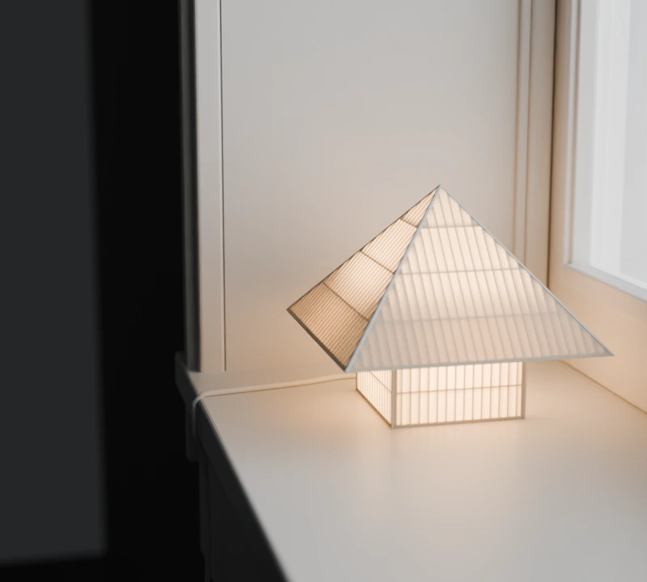

Lighting series


YANE
Roof lights · in progress
Roof forms, turned into everyday light.
A series of lamp shades made by stretching washi paper over a slender frame.
We are studying eight roof forms, including the pyramid, hip and hip-and-gable roofs.
Images are design-study CG renderings, not photographs of finished pieces. YANE is a work in progress and is not for sale.